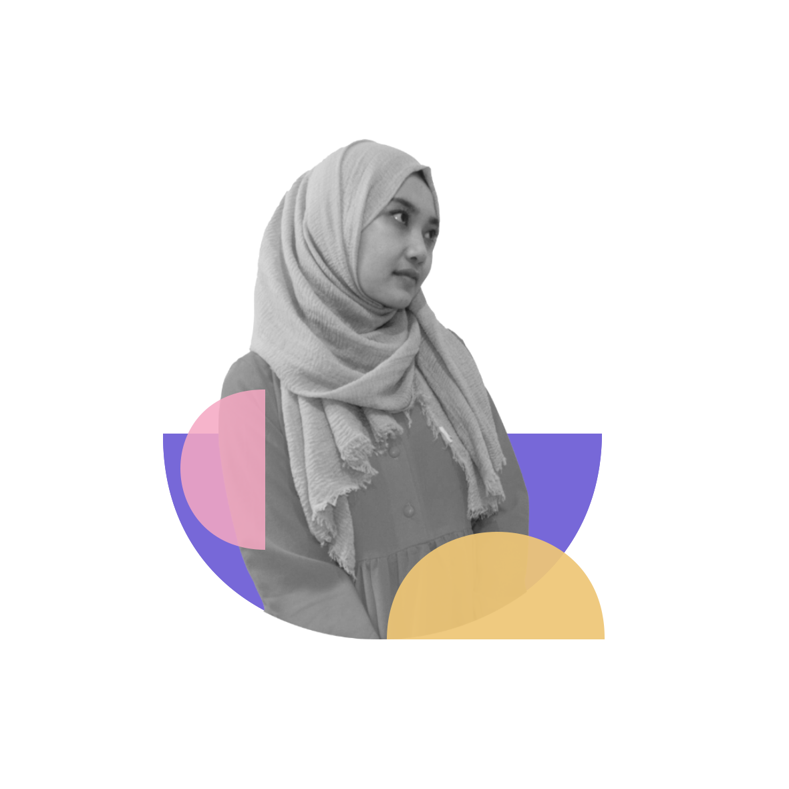

By Farah Afrianti
Farah Afrianti
Hallo, saya Farah Afrianti, lahir di Bandung, 28 April 2001, umur saya 20 tahun. Saya tinggal di Baregbeg, Ciamis, Jawa Barat, Perum Griya Sukma Hill Blok F5 no 6. Saya adalah salah satu peserta di Studi Independen Seal & AWS, hobby saya menggambar, membuat desain, dan mendengarkan musik. saya kuliah di salah satu Universitas di Ciamis, Universitas Galuh semester 6, dengan jurusan Administrasi Publik.
1. Microsoft word
2. Adobe Photoshop
3. Canva
4. Videographer
1. 2005 - 2007 : TK Sejahtera 2
2. 2007 - 2013 : SD Negeri 1 Cieurih
3. 2013 - 2016 : SMP Negeri 1 Cipaku
4. 2016 - 2019 : SMA Negeri 1 Kawali